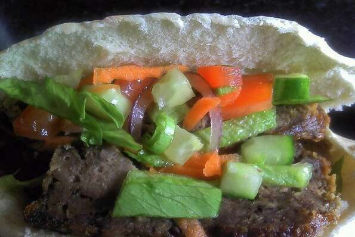

Authentic Turkish Doner Kebab 🇹🇷

Description
A very popular take-out especially after a night out at the pub. This
favorite is so, so tasty--I'm sure once you try it, you'll certainly want
to make more! Serve with warmed (lightly toasted) pita bread, chili sauce,
and a salad of shredded cabbage, carrot, onion, and sliced cucumber. Also
great to add as a topping for pizzas. Great to make in advance, slice and
freeze.
Ingredients
- 1 teaspoon all-purpose flour.
- 1 teaspoon dried oregano.
- ½ teaspoon salt.
- ½ teaspoon garlic powder.
- ½ teaspoon onion powder.
- ½ teaspoon dried Italian herb seasoning.
- ¼ teaspoon ground black pepper.
- ¼ teaspoon cayenne pepper.
- 1 ¼ pounds ground lamb.
Steps
- Preheat the oven to 350 degrees F (175 degrees C).
-
Combine flour, oregano, salt, garlic powder, onion powder, Italian
seasoning, black pepper, and cayenne pepper in a large bowl. Add ground
lamb and thoroughly knead with the flour mixture until thoroughly mixed
together, about 3 minutes.
-
Shape the seasoned ground lamb and place into a loaf pan; set on top of
a baking sheet.
-
Bake in the preheated oven, turning the loaf halfway to ensure even
browning, about 1 hour and 20 minutes.
-
Wrap loaf in aluminum foil and let rest, about 10 minutes. Slice as
thinly as possible to make the doner kebab pieces.
Next recipe
Go back home